Let's start with the very basics then...
Just some basic concepts for programmers
You cannot see it, but you know it's there...
...and somehow related to magnetism!
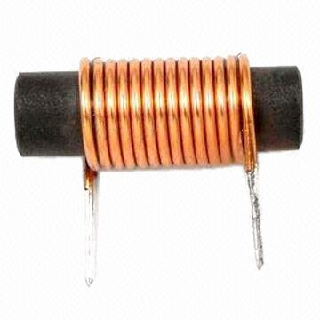magnets can induce electric current on a wire...
...electric current on a wire can generate a magnetic field
Equal charges (positive or negative) repel
Opposite charges attract
Charge attraction in Atoms works just like in Magnets
Why don't electrons collapse onto the protons?
By providing adequate external force, that last and distant electron can jump from one atom to the next one, producing the phenomena we describe as electric current
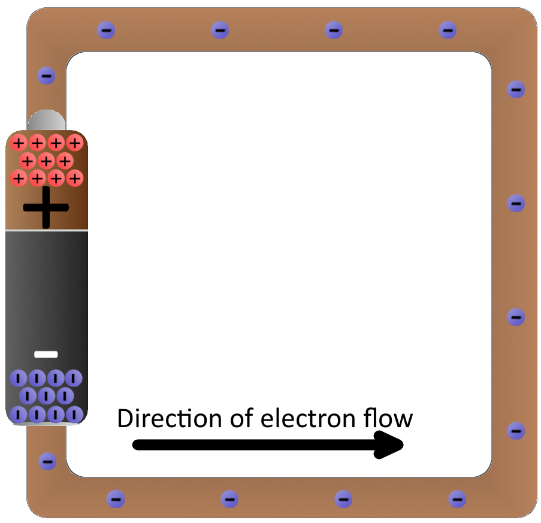The charge difference between poles is called Voltage
It basically means how hard the battery pushes electrons across the wire
We can increase or decrease the current in a conductor by increasing or decreasing the voltage (push harder/softer)
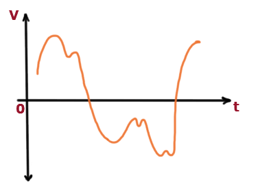Information (sound, audio, etc.) can be represented electrically by varying the current over time. We call this an Electric Signal
If the signal is continuous over time it is called Analog
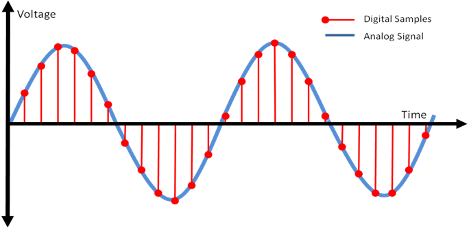If we sample and work with specific discrete values only, the signal is called Digital
The discrete digital values are encoded in a set of 0s and 1s, representing the two possible voltage levels on a digital signal
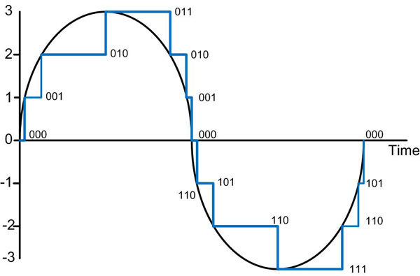But what sort of coding scheme is this, capable of transforming decimal numbers into zeros and ones?
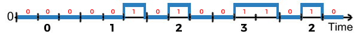 We need to understand some things about numbers before answering this question...Digital Signals have only two possible values of Voltage
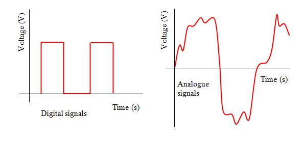Common sense says Digital is better than Analog!
How can digital signals with only two values be superior to analog?
The most important advantage of digital communication is immunity to noise interference
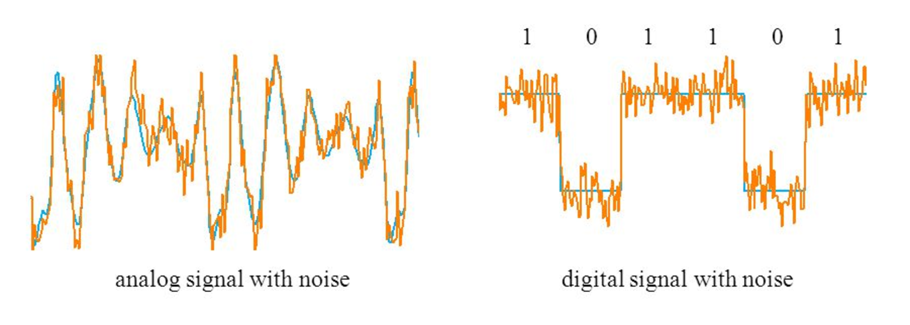Even with significant amount of noise, it's easy to distinguish between a 0 and a 1
Analog or digital, they are made of a combination of components allowing various simple and complex operations to be performed
Signals can be amplified, computations performed and data moved from one place to another
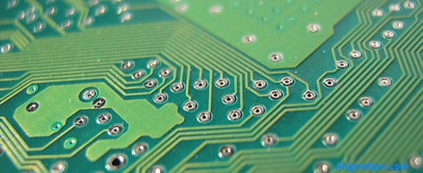Electronic circuits are typically built on a Printed Circuit Board where all the components are connected using conductive tracks
But there is one electronic component which is very important...Analog signals can be amplified using semiconductor devices called Transistors. Electronic signals switch between voltage levels using Transistors.
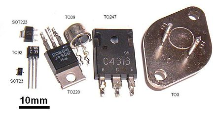They are the fundamental building block of all modern electronic devices and millions of them can be found in modern systems
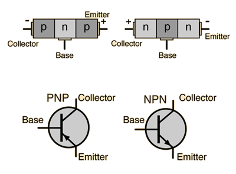
Switch the current on/off in a digital signal
An integrated circuit (also referred to as an IC, a chip, or a microchip) is a set of electronic circuits on one small flat piece of semiconductor material, normally silicon
As of 2017, the largest transistor count in a commercially IC is over 19.2 billion — the AMD Epyc
The CPU, Memory and most computer components are implemented as integrated circuits